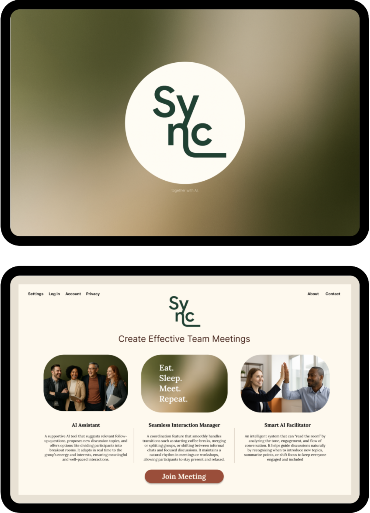

2026
Sync
To make digital meetings a more engaging and realistic alternative to short business trips, we developed the prototype for the service Sync. The solution aims to reduce the mental fatigue and cognitive load that often occur during video meetings by increasing engagement and supporting the social interaction within the group.
The center of the service is an AI facilitator that analyzes the flow of the conversation in real time to detect when the energy is dropping or when the discussion gets stuck. Instead of taking over the meeting, the AI acts as a supportive tool that gives suggestions, such as starting a poll, creating smaller discussion groups, or reminding the group to take a much-needed coffee break. The interface is also designed to involve the users more actively. To create a sense of safety and trust, the service was designed based on ethical guidelines with a focus on transparency and privacy. The participants always have the final say and remain in control of all suggestions.
The result was an ethically grounded meeting concept where AI supports human interaction in the background. This creates more engaging digital meetings while also contributing to Stockholm’s climate goals.
